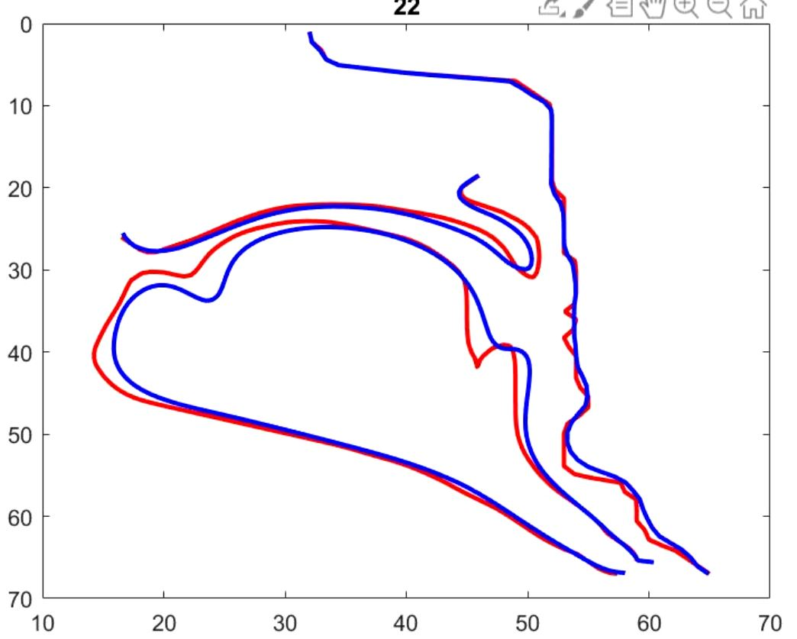
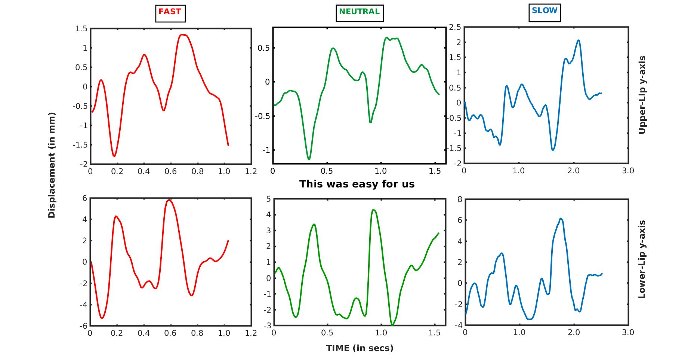
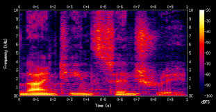

I am a Research Associate working at SPIRE Lab at IISC Bengaluru, India under the supervision of Dr. Prasanta Kumar Ghosh. Graduted from NIT Srinagar
in Computer Science & Engineering. At SPIRE lab I am working problems related to Audio-Visual Speech Synthesis, Accent Conversion and Developing TTS & ASR systems for multiple Indian languages.
During my under-graduate studies I have worked on projects mainly related to Computer Vision and NLP. Inquistive towards the field of Machine Learning and its unnumerable real-world applications.
• A study on native American English speech recognition by Indian listeners with varying
word familiarity level. Abhayjeet Singh, Achuth Rao MV, Rakesh Vaideeswaran, Chiranjeevi Yarra, Prasanta Kumar Ghosh COCOSDA 2021LINK
• Web Interface for estimating articulatory movements in speech production from acoustics and text. Sathvik Udupa, Anwesha Roy, Abhayjeet Singh, Aravind Illa, Prasanta Kumar Ghosh InterSpeech 2021LINK
• Estimating articulatory movements in speech production with transformer networks. Sathvik Udupa, Anwesha Roy, Abhayjeet Singh, Aravind Illa, Prasanta Kumar Ghosh InterSpeech 2021LINK
• Attention and Encoder-Decoder based models for transforming articulatory movements at different speaking rates. Abhayjeet Singh, Aravind Illa and Prasanta Kumar Ghosh InterSpeech 2020LINK
• A comparative study of estimating articulatory movements from phoneme sequences and acoustic features. Abhayjeet Singh, Aravind Illa and Prasanta Kumar Ghosh ICASSP 2020LINK
Advisor: Prof. Prasanta Kumar Ghosh (IISc Bangalore).
Speech recognition in agriculture and finance for the poor is an initiative predominantly to create resources and make them available as a digital public good in the open source domain to spur
research and innovation in speech recognition in nine different Indian languages in the
area of agriculture and finance.
Advisor: Prof. Prasanta Kumar Ghosh
(IISc Bangalore).
Conversion of non-native accent to native accent for better recognition of non-native speech.

Estimating Air Tissue Boundaries of articulators using Real-Time MRI data
Advisor: Prof. Prasanta Kumar Ghosh (IISc Bangalore).
Estimating ATB contours of articulators from phonemes in speech production using real-time MRI data.
Various Encoder-Decoder, Attention and Transformer netorwks are used to estimate the ATB contours.
Previous Projects
Estimating articulatory movements from phonemes spkoken during speech production.
Advisor: Prasanta Kumar Ghosh, Aravind Illa (IISc Bengaluru).
Predicting articulatory movements from phonemes using Encoder-Decoder models with Attention mechanism for modelling durations between phonemes and respective articulatory movements.

ASTNET - Prediction of Articulatory Motion in Speech Production at different rates
Advisor: Prasanta Kumar Ghosh, Aravind Illa (IISc Bengaluru).
Prediction of Articulatory Motion at different rates using Encoder Decoder Model and Dynamic Time Warping Algorithm for Alignment. Predicting articulators at varied speaking rates can be used to enhance performance of ASR systems in real-time.
Sign Language Recognition using CNN
Advisor: Prof. RN Mir & Ab Rouf Khan (NIT Srinagar, India)
Classifying various hand gestures as English language alphabets in real time using Convolutional Neural Networks.

Language Identification System
Advisor: Advisor: Prof. Arun Balaji Budru (IIIT Delhi).
Detection of various Indian languages using a convolutional recurrent neural network (CRNN).The CRNN
model was trained with input as grey scale image of the audio’s spectrogram.